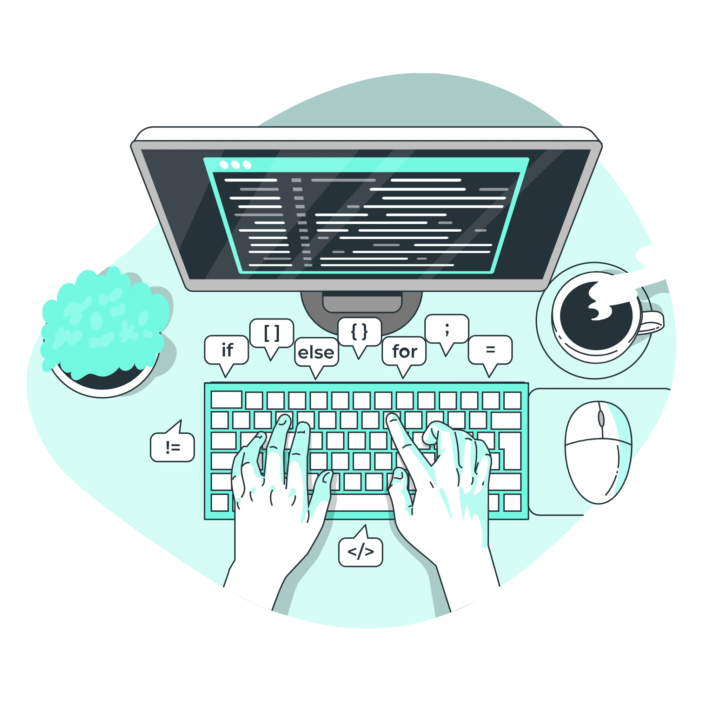
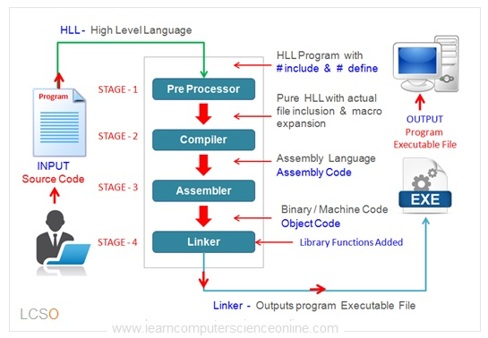
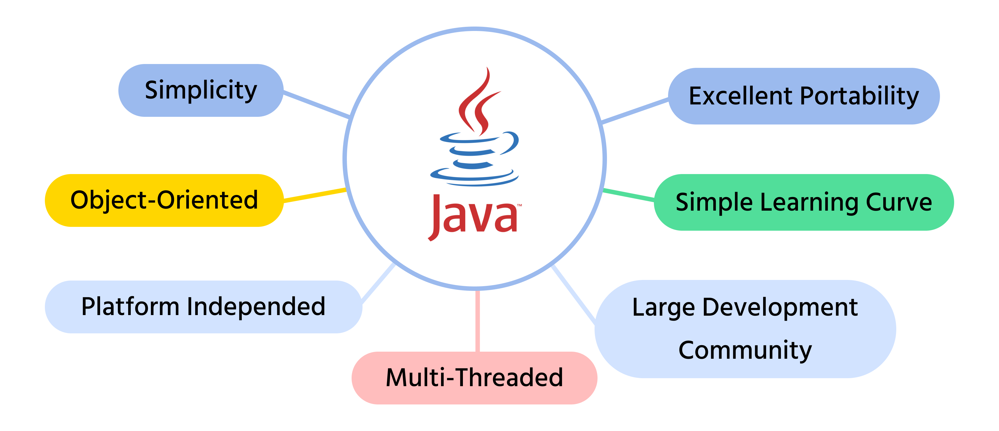
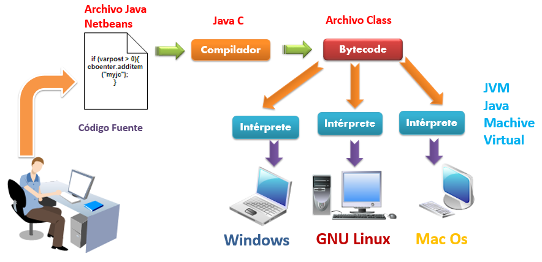
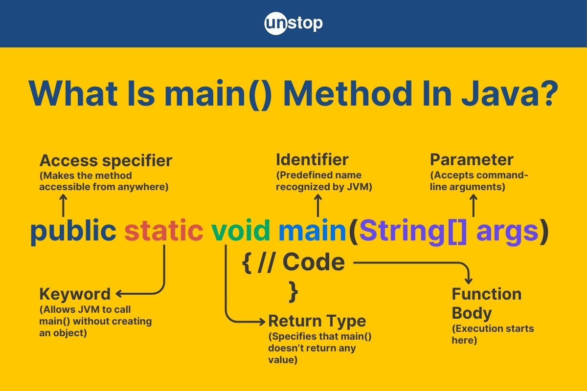

Introducción a la programación
Programar es el proceso de crear un conjunto de instrucciones que una computadora puede entender y ejecutar para realizar una tarea específica. Es la base de la informática y permite desarrollar software, aplicaciones y sistemas que utilizamos a diario.
¿Qué significa programar?
Programar significa crear una secuencia ordenada de instrucciones que un ordenador puede interpretar y ejecutar. Estas instrucciones no dejan lugar a ambigüedades: el sistema ejecuta exactamente lo que se le indica.
Cada instrucción forma parte de un flujo que transforma datos de entrada en resultados de salida.

Programa informático
Un programa informático es el resultado final del proceso de programación. Está formado por instrucciones escritas en un lenguaje de programación que permiten automatizar una tarea.
Los programas pueden ser muy simples o extremadamente complejos, pero todos siguen la misma idea básica: instrucciones + datos + ejecución.

Lenguajes de programación
Los lenguajes de programación permiten escribir instrucciones de forma comprensible para las personas y transformarlas en un formato que la máquina pueda ejecutar.
- Lenguajes compilados: se traducen completamente antes de ejecutarse.
- Lenguajes interpretados: se ejecutan línea a línea.
- Lenguajes mixtos: combinan ambos enfoques, como Java.
| Lenguajes | Tipo | Ejemplo de uso |
|---|---|---|
| Java, C#, JavaScript, Python, etc | Mixto | Aplicaciones empresariales, Android, web |
| Python, Swift, PHP, etc | Interpretado | Ciencia de datos, automatización, desarrollo web |
| C++, Go, Rust, etc | Compilado | Videojuegos, sistemas operativos, aplicaciones de alto rendimiento |
JAVA
En este curso utilizaremos Java, un lenguaje de programación muy popular y versátil. Java es un lenguaje de propósito general que se utiliza en una amplia variedad de aplicaciones, desde aplicaciones móviles hasta sistemas empresariales.
Java es un lenguaje de tipo mixto, lo que significa que combina características de lenguajes compilados e interpretados. El código fuente de Java se compila en un formato intermedio llamado bytecode, que luego es ejecutado por la máquina virtual de Java (JVM).

Compilación y ejecución
En lenguajes como Java, el código fuente se transforma primero en un formato intermedio (bytecode) que posteriormente es ejecutado por una máquina virtual.
Este proceso permite que el mismo programa pueda ejecutarse en distintos sistemas operativos.

Estructura de un programa
Todo programa informático sigue una estructura básica que organiza el código y define cómo se ejecutan las instrucciones. Esta estructura facilita la lectura, el mantenimiento y la ampliación del software.
Ejemplo de estructura básica:
// Estructura básica de un programa Java
public class MiPrograma {
public static void main(String[] args) {
// Código a ejecutar
}
}Estructura general
Un programa se organiza en bloques claramente definidos: clases, métodos, variables e instrucciones. Cada bloque cumple una función concreta dentro del conjunto.
- Clases: contenedores principales.
public class MiPrograma {
public static void main(String[] args) {
// Código a ejecutar
}
}public void saludar() {
System.out.println("Hola");
}int edad = 25;
String nombre = "Linkia";Ejemplo de uso de todo lo mencionado:
// Programa completo con estructura básica
public class MiPrograma {
public static void main(String[] args) { // Punto de entrada del programa
String nombre = "Linkia"; // Variable para almacenar el nombre
int edad = 25; // Variable para almacenar la edad
System.out.println("Hola, soy " + nombre + " y tengo " + edad + " años."); // Instrucción para mostrar un mensaje
}
}Punto de entrada del programa
En Java, la ejecución comienza siempre en un método principal llamado main.
Este método actúa como punto de inicio del programa.

Aunque ahora vemos muchos conceptos, solo nos tenemos que quedar con el método main como punto de entrada del programa y que el código que vamos a aprender debe estar dentro de este método.
Modularidad
La modularidad consiste en dividir el programa en partes independientes y reutilizables. Esto facilita la comprensión del código y reduce errores.
Ventajas de una buena estructura
- Mayor claridad y legibilidad.
- Facilidad de mantenimiento.
- Posibilidad de reutilizar código.
- Escalabilidad del programa.
Variables y tipos de datos
Los programas necesitan trabajar con información. Para ello se utilizan variables, constantes y distintos tipos de datos que permiten representar esa información.
Variables
Una variable es un espacio de memoria identificado por un nombre. Su valor puede cambiar durante la ejecución del programa.
int edad = 20;
double nota = 7.5;Ámbito de una variable
El ámbito define en qué partes del programa puede utilizarse una variable. Normalmente está limitado al bloque donde se declara.
Tipos de datos
Los tipos de datos indican qué clase de información puede almacenar una variable y qué operaciones se pueden realizar con ella.
- int, long: números enteros.
- double, float: números decimales.
- char: caracteres.
- boolean: valores lógicos.
- String: cadenas de texto.
Constantes y literales
Las constantes representan valores que no cambian durante la ejecución del programa. Los literales son valores escritos directamente en el código.
final double PI = 3.1416;
boolean activo = true;Operadores y conversión de tipos
Los operadores permiten realizar cálculos, comparaciones y evaluaciones lógicas. La conversión de tipos permite adaptar los datos a diferentes contextos.
Operadores
Los operadores actúan sobre uno o varios valores para producir un resultado.
- Aritméticos: +, -, *, /, %.
- Relacionales: ==, !=, >, <.
- Lógicos: &&, ||, !.
Ejemplo de operadores
int a = 10;
int b = 3;
int suma = a + b;
boolean mayor = a > b;Conversión de tipos
En algunos casos la conversión es automática, pero en otros es necesario forzarla mediante un casting explícito.
double valor = 9.8;
int entero = (int) valor;Conversión entre texto y números
Es habitual convertir cadenas de texto en valores numéricos y viceversa.
String texto = "25";
int numero = Integer.parseInt(texto);Comentarios y documentación
Documentar el código es esencial para comprender su funcionamiento y facilitar su mantenimiento a lo largo del tiempo.
Tipos de comentarios
Los comentarios no se ejecutan y sirven para explicar el código.
// Comentario de una línea
/* Comentario de varias líneas */Buenas prácticas de documentación
- Comentar el propósito del código.
- Evitar comentarios redundantes.
- Mantener los comentarios actualizados.
Documentación estructurada (Javadoc)
Javadoc permite generar documentación técnica automática a partir del código fuente.
/**
* Devuelve la suma de dos números
*/
int sumar(int a, int b) {
return a + b;
}Entornos de desarrollo
Para desarrollar programas de forma eficiente se utilizan entornos integrados que facilitan la escritura, compilación y depuración del código.
Entornos Integrados de Desarrollo (IDE)
Un IDE integra en una sola herramienta el editor de código, el compilador, la consola y el depurador.
- NetBeans
- Eclipse
- IntelliJ IDEA
Compilación y ejecución
Los programas pueden ejecutarse desde un IDE o desde la línea de comandos.
javac Hola.java
java HolaDepuración
La depuración permite analizar la ejecución paso a paso y detectar errores lógicos o de ejecución.